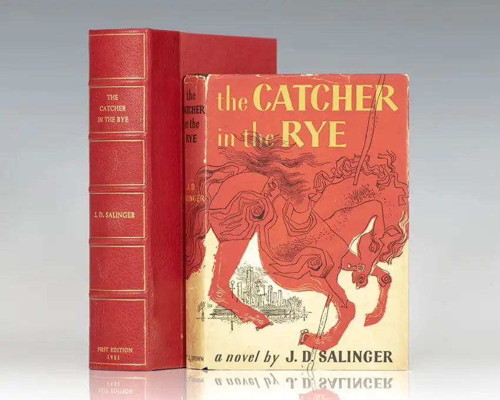
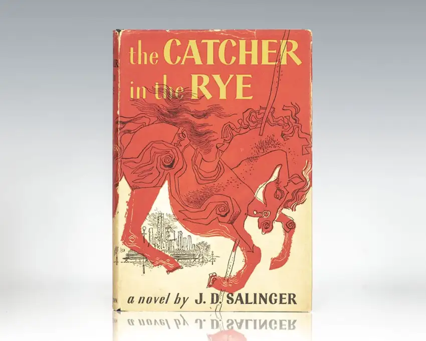
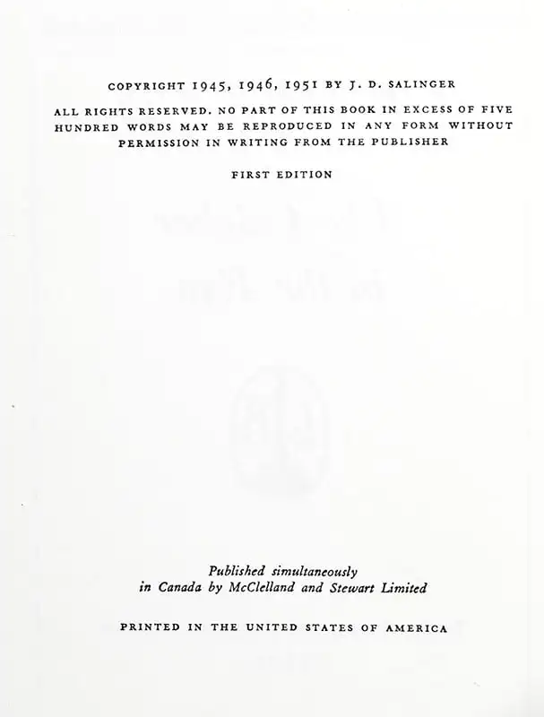

The Catcher in the Rye
199.000₫

199.000₫
The Catcher in the Rye, novel by J.D. Salinger published in 1951. The novel details two days in the life of 16-year-old Holden Caulfield after he has been expelled from prep school. Confused and disillusioned, Holden searches for truth and rails against the “phoniness” of the adult world. He ends up exhausted and emotionally unstable. The events are related after the fact.